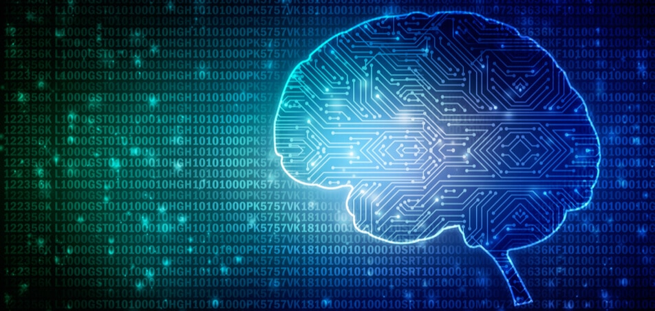

Inteligência artificial (por vezes mencionada pela sigla em português IA ou pela sigla em inglês AI - artificial intelligence) é a inteligência similar à humana exibida por sistemas de software, além de também ser um campo de estudo acadêmico. Os principais pesquisadores e livros didáticos definem o campo como "o estudo e projeto de agentes inteligentes", onde um agente inteligente é um sistema que percebe seu ambiente e toma atitudes que maximizam suas chances de sucesso. Andreas Kaplan e Michael Haenlein definem a inteligência artificial como “uma capacidade do sistema para interpretar corretamente dados externos, aprender a partir desses dados e utilizar essas aprendizagens para atingir objetivos e tarefas específicos através de adaptação flexível”.[1] John McCarthy, quem cunhou o termo em 1956 ("numa conferência de especialistas celebrada em Darmouth Colege" Gubern, Román: O Eros Eletrónico), a define como "a ciência e engenharia de produzir máquinas inteligentes". É uma área de pesquisa da computação dedicada a buscar métodos ou dispositivos computacionais que possuam ou multipliquem a capacidade racional do ser humano de resolver problemas, pensar ou, de forma ampla, ser inteligente. Também pode ser definida como o ramo da ciência da computação que se ocupa do comportamento inteligente[2] ou ainda, o estudo de como fazer os computadores realizarem coisas que, atualmente, os humanos fazem melhor.[3] O principal objetivo dos sistemas de IA, é executar funções que, caso um ser humano fosse executar, seriam consideradas inteligentes. É um conceito amplo, e que recebe tantas definições quanto damos significados diferentes à palavra inteligência.[4] Podemos pensar em algumas características básicas desses sistemas, como a capacidade de raciocínio (aplicar regras lógicas a um conjunto de dados disponíveis para chegar a uma conclusão), aprendizagem (aprender com os erros e acertos de forma que no futuro agirá de maneira mais eficaz), reconhecer padrões (tanto padrões visuais e sensoriais, como também padrões de comportamento) e inferência (capacidade de conseguir aplicar o raciocínio nas situações do nosso cotidiano).[4] O desenvolvimento da área começou logo após a Segunda Guerra Mundial, com o artigo "Computing Machinery and Intelligence" do matemático inglês Alan Turing,[5] e o próprio nome foi cunhado em 1956.[6][7] Seus principais idealizadores foram os cientistas Herbert Simon, Allen Newell, John McCarthy, Warren McCulloch, Walter Pitts e Marvin Minsky, entre outros. A construção de máquinas inteligentes interessam à humanidade há muito tempo, havendo na história tanto um registro significante de autômatos mecânicos (reais) quanto de personagens místicos (fictícios) construídos pelo homem com inteligência própria, tais como o Golem e o Frankenstein. Tais relatos, lendas e ficções demonstram expectativas contrastantes do homem, de fascínio e de medo, em relação à Inteligência Artificial.[8][9] Apenas recentemente, com o surgimento do computador moderno, é que a inteligência artificial ganhou meios e massa crítica para se estabelecer como ciência integral, com problemáticas e metodologias próprias. Desde então, seu desenvolvimento tem extrapolado os clássicos programas de xadrez ou de conversão e envolvido áreas como visão computacional, análise e síntese da voz, lógica difusa, redes neurais artificiais e muitas outras. Inicialmente a IA visava reproduzir o pensamento humano. A Inteligência Artificial abraçou a ideia de reproduzir faculdades humanas como criatividade, auto-aperfeiçoamento e uso da linguagem. Porém, o conceito de inteligência artificial é bastante difícil de se definir. Por essa razão, Inteligência Artificial foi (e continua sendo) uma noção que dispõe de múltiplas interpretações, não raro conflitantes ou circulares.[3]
A questão sobre o que é "inteligência artificial", mesmo como definida anteriormente, pode ser separada em duas partes: "qual a natureza do artificial" e "o que é inteligência". A primeira questão é de resolução relativamente fácil, apontando no entanto para a questão de o que poderá o homem construir. A segunda questão seria consideravelmente mais difícil, levantando a questão da consciência, identidade e mente (incluindo a mente inconsciente) juntamente com a questão de que componentes estão envolvidos no único tipo de inteligência que universalmente se aceita como estando ao alcance do nosso estudo: a inteligência do ser humano. O estudo de animais e de sistemas artificiais que não são modelos triviais, começa a ser considerados como matéria de estudo na área da inteligência. Ao conceituar inteligência artificial, presume-se a interação com o ambiente, diante de necessidades reais como relações entre indivíduos semelhantes, a disputa entre indivíduos diferentes, perseguição e fuga; além da comunicação simbólica específica de causa e efeito em diversos níveis de compreensão intuitiva, consciente ou não. Suponhamos uma competição de cara ou coroa, cujos resultados sejam observados ou não. Se na segunda tentativa der o mesmo resultado que a primeira, então não existiam as mesmas chances para ambas as 2 opções iniciais. Claro que a coleta de informação em apenas duas amostragens é confiável apenas porque a quantidade de tentativas é divisível pelo número de opções de resultados prováveis. A verdade é que o conceito de cara ou coroa está associado a artigos de valor, como moedas e medalhas que podem evitar que as pessoas abandonem o jogo e induzir participantes a acompanhar os resultados até o final. Para manter a disposição do adversário em desafiar a máquina seria necessário aparentar fragilidade e garantir a continuidade da partida. Isso é muito utilizado em máquinas de cassino, sendo que vários apostadores podem ser induzidos a dispensar consideráveis quantias em apostas. A utilização de uma máquina de resultados pode compensar a ausência de um adversário, mas numa partida de xadrez, por exemplo, para que a máquina não precise armazenar todas as informações que excedem a capacidade de próprio universo imaginável são necessárias fórmulas que possam ser armazenadas para que então sejam calculadas por princípios físicos, lógicos, geométricos, e estatísticos para refletir o sistema completo em cada uma das suas partes; como a integração do Google com Wikipedia, por exemplo. Uma popular e inicial definição de inteligência artificial, introduzida por John McCarthy na famosa conferência de Dartmouth em 1956 é "fazer a máquina comportar-se de tal forma que seja chamada inteligente caso fosse este o comportamento de um ser humano." No entanto, esta definição parece ignorar a possibilidade de existir a IA forte (ver abaixo). Outra definição de Inteligência Artificial é a inteligência que surge de um "dispositivo artificial". A maior parte das definições podem ser categorizadas em sistemas que: "pensam como um humano; agem como um humano; pensam racionalmente ou agem racionalmente".[10]
A IA, nas mais diversas áreas, acaba realizando apenas tarefas específicas ao contexto em que é aplicada. Cada sistema criado é limitado a um conjunto de atividades de cada finalidade: um bot. (diminutivo de robot) de atendimento vai trabalhar com ofertas de produtos, responder a dúvidas, negociar dívidas mas esse mesmo bot. não vai conseguir jogar xadrez ou guiar um veículo autônomo, por exemplo, já que não consegue elaborar estratégias funcionais e sim apenas executar comandos com base em alguma análise de dados relativa à sua função. Um sistema tão complexo e abrangente como o cérebro humano ainda é uma realidade distante. Os extraordinários avanços da neurociência mostram que o ser humano ainda está longe de compreender alguns mistérios do cérebro humano, entre eles, a incrível capacidade de criar, destruir e refinar ideias, ou seja, a criatividade. A IA é mais competente do que as pessoas em tarefas de análise, organização e até resolução de alguns problemas, mas ainda não é capaz de melhorar a si mesma, em diversos campos, e aprender coisas novas sem informações prévias. Grandes empresas já estão trabalhando na chamada ‘deep learning’ (aprendizagem profunda), um dos mais promissores campos da IA, que pretende fazer dos sistemas entidades capazes de aprender evolutivamente. Mas, ainda não é possível, e talvez nunca será, eliminar o fator humano, entre outros pontos, da própria avaliação de progresso dessa disciplina tecnológica.
Um sistema que utiliza inteligência artificial pode armazenar e analisar bilhões de dados, realizar automaticamente tarefas com base nessa análise, fechar acordos, vender, controlar uma linha de produção etc., mas não é capaz de criar estratégias do zero. Além disso, tudo o que envolve humanização, sentimentos como empatia ou características como dedicação, mesmo em um contexto onde a IA se espalhe, ainda dependerá de uma interação entre o homem e a máquina. Empregos como os conhecemos hoje se transformarão, muitos inclusive deixarão de existir, mas tantos outros novos surgirão.
Apesar de uma grande porcentagem das funções terem parte de seus processos automatizada, nos dias de hoje, menos de 10% das atividades podem ser inteiramente substituídas por tecnologia. Nas indústrias haverá uma ampla troca da mão-de-obra humana pela força de trabalho de máquinas automáticas e programas de computador que possam executar, automaticamente, tarefas repetitivas sem qualquer tipo de adversidade, já que não sofrem com todas as vulnerabilidades que um ser-humano detém como cansaço, riscos de sofrer acidentes e mobilidade, além do fato de não gerar despesas para a organização a não ser com sua manutenção e funcionamento. Porém, como se trata de um ramo da ciência relativamente novo e que está em uma fase de desenvolvimento lenta e gradual, ainda pode demorar para que a inteligência artificial cause algum impacto, realmente, significativo para as relações dentro da sociedade.[11]
A inteligência artificial começou como um campo experimental nos anos 50 com pioneiros como Allen Newell e Herbert Simon, que fundaram o primeiro laboratório de inteligência artificial na Universidade Carnegie Mellon, e McCarty que juntamente com Marvin Minsky, que fundaram o MIT AI Lab em 1959. Foram eles alguns dos participantes na famosa conferência de verão de 1956 em Darthmouth College.[29] Historicamente, existem dois grandes estilos de investigação em IA: IA "neats" e IA "scruffies". A IA "neats", limpa, clássica ou simbólica. Envolve a manipulação de símbolos e de conceitos abstractos, e é a metodologia utilizada na maior parte dos sistemas periciais. Paralelamente a esta abordagem existe a abordagem IA "scruffies", ou "coneccionista", da qual as redes neuronais são o melhor exemplo. Esta abordagem cria sistemas que tentam gerar inteligência pela aprendizagem e adaptação em vez da criação de sistemas desenhados com o objectivo especifico de resolver um problema. Ambas as abordagems apareceram num estágio inicial da história de IA. Nos anos 60s e 70s os coneccionistas foram retirados do primeiro plano da investigação em IA, mas o interesse por esta vertente da IA foi retomada nos anos 80s, quando as limitações da IA "limpa" começaram a ser percebidas. Pesquisas sobre inteligência artificial foram intensamente custeadas na década de 1980 pela Agência de Projetos de Pesquisas Avançadas sobre Defesa (“Defense Advanced Research Projects Agency”), nos Estados Unidos, e pelo Projeto da Quinta Geração (“Fifth Generation Project”), no Japão. O trabalho subsidiado fracassou no sentido de produzir resultados imediatos, a despeito das promessas grandiosas de alguns praticantes de IA, o que levou proporcionalmente a grandes cortes de verbas de agências governamentais no final dos anos 80, e em conseqüência a um arrefecimento da atividade no setor, fase conhecida como O inverno da IA. No decorrer da década seguinte, muitos pesquisadores de IA mudaram para áreas relacionadas com metas mais modestas, tais como aprendizado de máquinas, robótica e visão computacional, muito embora pesquisas sobre IA pura continuaram em níveis reduzidos.
Uma das áreas mais estudadas por cientistas sobre Inteligência Artificial, é o processo de Resolução de Problemas, desde os mais simples até os mais complexos. Com base no estudos de comportamentos de indivíduos que resolvem problemas simples em laboratório, Allen Newell e Herbert Simon desenvolveram alguns programas para simular aspectos do comportamento inteligente e racional. Um de seus principais programas desenvolvidos, chamado 'General Problem Solver' (Solucionador de Problemas Gerais) pode ser resumido em poucas etapas: a primeira etapa consiste em gravar as declarações realizadas por alguns indivíduos que verbalizam seu pensamento enquanto resolvem os problemas. A seguir, o teórico ensaia algumas hipóteses acerca dos processos mentais que possivelmente estariam envolvidos no processo de elaboração de uma solução para o problema dado. A partir dessas hipóteses ele estrutura um programa que, em sua opinião, simulará o relato gravado. Finalmente, após processar esse programa no computador digital, ele compara o relato do indivíduo com o roteiro da máquina. Se os fluxos de palavras registrados no roteiro e no relatório forem razoavelmente semelhantes, então considera-se que uma explicação para o comportamento sob estudo foi obtida. Os pesquisadores do Projeto de Simulação Cognitiva admitem, neste caso, que as estratégias utilizadas pelo computador são análogas àquelas realizadas pelo indivíduo humano. Caso contrário, o programa deverá ser modificado com base nas discrepâncias encontradas durante o confronto de palavras. O mesmo procedimento é repetido até que um ajuste satisfatório seja obtido e o programa consiga passar pelo teste de Turing. Ou seja, até que os fluxos de palavras produzidas pelo computador e pelo sujeito humano sejam praticamente indistinguíveis para um examinador humano.[30] [31]